中英双语，贡献优先重构版
已训练神经网络中的共享二元局部算子辨识
摘要
可学习的二元激活函数会形成可视化的二维表面，但训练后形态究竟来自函数初始化、任务数据，还是外围网络已有的表示，仍缺少直接干预。我们在两个已经训练的 Transformer 宿主中分别用 InnerNet 替换乘法与 SwiGLU，并改变探针的初始函数和训练方式。双线性宿主的 20 个条件全部恢复乘法，SwiGLU 宿主的 20 个条件全部恢复 SwiGLU 类函数。该结果只覆盖这两类宿主及当前协议。冻结外围网络时，InnerNet 与原 SwiGLU 解的 WikiText-2 困惑度报告到两位小数均为 77.38；这说明 InnerNet 在该宿主中能够逼近已有局部算子，并不构成统计等价性检验。我们还把 CNN 中的训练后表面替换为固定三阶多项式。未融合 Poly3 相对 InnerNet 提速 2.68 倍，同时损失 3.63 个准确率点，速度仍比 SwiGLU 慢 2.46 倍。原论文复现和跨架构实验进一步表明，二元局部函数的效果随网络和训练路径改变。本文据此在当前两个宿主中把共享 InnerNet 用作局部算子恢复探针。树突多输入计算解释了这一模型形式的来源，但本文没有新增生物数据。
1 引言
人工神经元通常先汇总输入，再施加一元非线性。生物神经元的输入整合更有区室性。基底与顶端树突接收不同来源的信号，局部树突事件可以耦合来自不同皮层层次的输入 [23]。详细的锥体神经元模型也显示，多个非线性树突子单元可以构成类似两层网络的计算结构 [21]。Gidon 等在人类皮层树突中观察到能够区分线性不可分输入的事件，并将其描述为 XOR-like 计算 [2]。这些工作给出了一个具体的建模问题：如果单个计算单元同时接收两路投影，它在任务训练后会形成怎样的局部函数？
Yoon 等人据此提出共享二输入 InnerNet [1]。同一个小型多层感知机在整个外围网络中重复调用，输入可类比为基底与顶端树突通路。该工作已经建立了训练后表面、soft XOR 与皮层树突观察之间的联系。在 MNIST 和 CIFAR-10 的 MLP 与 CNN 中，训练后的函数经常呈现二次、门控或 soft XOR 形态，模型在部分设置中学习更快，并对自然扰动和对抗扰动更稳健。原论文还比较了随机初始化函数，分析了曲率与频谱，并拟合二次多项式。因此，二元激活、soft XOR 和神经科学类比都不是本文的新贡献。
原研究留下了一个实验上可以分离的问题。训练后的二维表面既可能反映 InnerNet 的初始化，也可能只是当前宿主表示附近容易保持的局部计算。仅从一组端到端训练得到的表面，无法区分两者。多项式拟合也只说明神经模块可由简单公式近似；只有将公式实际放回网络，才能知道近似误差如何影响任务性能和运行成本。
本文直接干预已经训练的局部算子。我们先用固定乘法或固定 SwiGLU 训练宿主，再以不同初始化的 InnerNet 替换原算子。这样可以观察同一个探针进入不同宿主后恢复什么函数。冻结宿主、联合训练和从头训练对照用于区分函数表示能力与联合优化。拟合出的固定公式随后被放回模型，用于测量准确率和吞吐。跨任务实验放在这些受控结果之后，用来界定该方法在哪些架构中有效，任务数量本身不构成主要贡献。
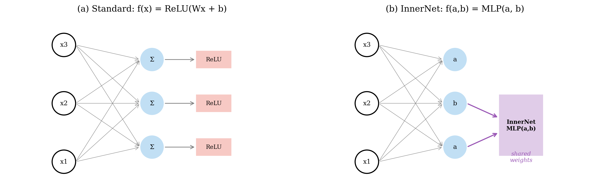
图 1｜共享二元局部函数。 标准单元对一个加权和施加固定非线性。InnerNet 接收两路线性投影，并计算共享函数 fθ(a,b)。 同一函数在多个神经元和层中重复调用，因此训练后的二维表面可以脱离单个位置进行分析。
1.1 相关工作
可学习激活函数在自由度和可读性之间取不同折中。PReLU 只学习负半轴斜率 [4]，Padé activation 与 spline activation 允许一元曲线随训练改变 [10][11]。ACON 和 Attention as Activation 进一步让局部非线性依赖输入或通道上下文 [8][9]。Network In Network 用局部 MLP 取代卷积层中的简单线性滤波 [3]。本文使用的 InnerNet 直接来自 Yoon 等人的二输入设计。我们的实验测量训练后函数如何随宿主状态变化；soft XOR 的学习能力沿用原工作的结论。
激活和局部算子搜索通常先规定公式图或操作集合。Swish 来自一元与二元 primitive 的组合搜索 [5]；PANGAEA 把进化搜索与连续参数优化结合，并观察到架构相关的激活函数 [6]；EvoNorm 搜索归一化与激活的联合表达式 [7]。DARTS 和 AutoML-Zero 分别把搜索扩展到网络操作与学习算法 [13][14]。InnerNet 不搜索全网拓扑。它用一个连续二维函数替换网络中反复出现的局部算子。本文只检验它能否从双线性与 SwiGLU 宿主恢复相应的已知算子。
乘法与门控本身已有成熟设计。LSTM 和 GRU 用门控制循环状态 [16][17]，GLU 与 SwiGLU 用两路线性投影构造逐元素门控 [18][19]。乘法交互还可统一描述 attention、hypernetwork 和动态卷积 [20]。SwiGLU 宿主中的恢复实验只检验探针能否读出已有算子。
训练后提取公式也有直接先例。Equation Learner 在预定义数学 primitive 上学习稀疏方程 [25]。Cranmer 等人对神经网络内部模块进行 symbolic regression，再用闭式表达式替换原模块 [24]。KAN 在网络边上学习 spline，并通过剪枝和 symbolification 得到简单公式 [12]。本文关心的是共享二元局部函数，新增测量集中在宿主替换以及公式替换后的任务性能和速度。Network Morphism 通过保函数变换从已有网络迁移到新结构，为这种基于成熟宿主的训练方式提供了相邻背景 [15]。
2 结果
2.1 恢复的函数族随宿主算子改变
我们先训练两类 Transformer 宿主。第一类使用固定双线性算子 a·b， 第二类使用固定 SwiGLU。宿主完成训练后，固定算子被共享 InnerNet 替换。双线性宿主测试随机与乘法初始化，并分别冻结或联合训练外围网络；SwiGLU 宿主测试随机、恒等、乘法和 SwiGLU 初始化，并联合训练。每种设置包含五个随机种子，共 40 个条件。
| 宿主 | 探针变化 | 条件数 | 恢复结果 |
|---|---|---|---|
| 双线性 | 随机或乘法初始化；冻结或联合训练 | 20 | 20/20 判为 multiplication；逐条件 multiplication R²=0.9949-0.9996 |
| SwiGLU | 随机、恒等、乘法或 SwiGLU 初始化；联合训练 | 20 | 20/20 判为 SwiGLU；逐条件 scaled SwiGLU R²=0.9830-0.9938 |
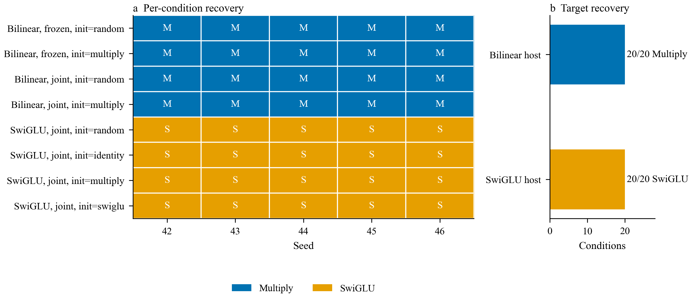
图 2｜两类宿主中的算子恢复。 每个单元格对应一个随机种子和探针设置。函数标签只比较 multiplication 与 scaled SwiGLU 的 R²。M 和 S 分别表示这两个标签。Poly2 与 Poly3 用于描述拟合，但不参与标签判定。
两类宿主在当前 40 个条件中完全分开。相同初始函数进入不同宿主后得到不同标签，同一宿主中的所测初始化则得到相同标签。初始化不足以单独解释这些表面。现有结论限于双线性与 SwiGLU 这两个宿主及当前替换协议：恢复的函数族随宿主算子改变。实验没有分离表示尺度、特征基底和梯度场各自的作用，也没有证明恢复函数是宿主附近的唯一解。
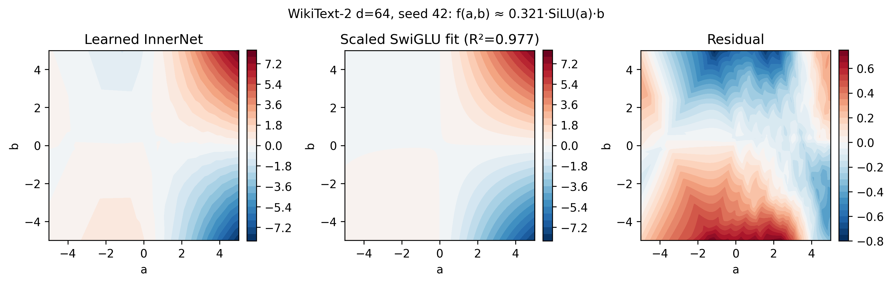
图 3｜训练后表面的闭式拟合。 一个 Transformer 检查点中的 InnerNet 可由 scaled SwiGLU 项解释 97.7% 的方差。单个表面的拟合不能确定函数由何产生；图 2 使用两类宿主和多个初始化进行受控比较。
2.2 冻结宿主把表示能力与联合优化分开
宿主替换还可以检查 InnerNet 是否有能力保持一个已经训练好的局部算子。我们在 WikiText-2 的 d=128 Transformer 中先训练 SwiGLU 网络，再用 InnerNet 替换局部算子。只训练 InnerNet 并冻结其他参数时，五个种子的 frozen InnerNet 与 SwiGLU 容量基线的平均困惑度分别为 77.377 和 77.385，报告到两位小数均为 77.38。两组离散程度不同，且这里没有等价性检验。该结果只说明 InnerNet 在此宿主和训练预算下能够逼近已经存在的 SwiGLU 解。
允许外围网络与 InnerNet 一起更新后，模型可以离开原始 SwiGLU 解附近。warm-start 轨迹比从头训练稳定，但这种差异同时受到表示起点、特征尺度和优化预算影响。现有 scratch 对照没有补齐全部计划种子，因此本文不从这些运行推导普遍的初始化规律。受控结果支持一个较窄的判断：端到端性能差距不能全部归因于 InnerNet 缺少表达 SwiGLU 的能力，联合优化至少是所测设置中的一部分困难。
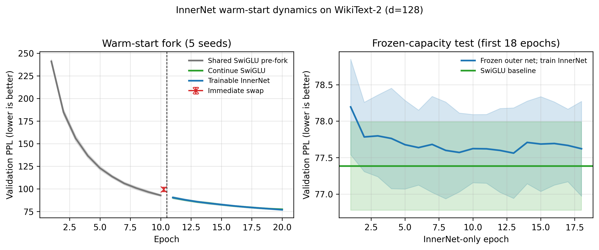
图 4｜从同一 SwiGLU 宿主分叉的训练轨迹。 左图比较继续使用 SwiGLU 与替换为可训练 InnerNet 的联合训练。右图冻结外围网络，只更新 InnerNet。曲线汇总五个随机种子；冻结实验在报告到两位小数时保持原解。
2.3 固定 Poly3 替换暴露出精度与速度代价
共享 InnerNet 的参数量不大，计算图却包含多次逐元素变换、中间张量和未融合 kernel。在同一块 RTX 2080 Ti 上，当前 InnerNet 实现的 CNN 与 Transformer 前向时间分别是 SwiGLU 的 17.33 倍和 12.02 倍。profiled FLOPs 无法解释全部差距，因为小 kernel 的调度和内存访问占用了实际运行时间。
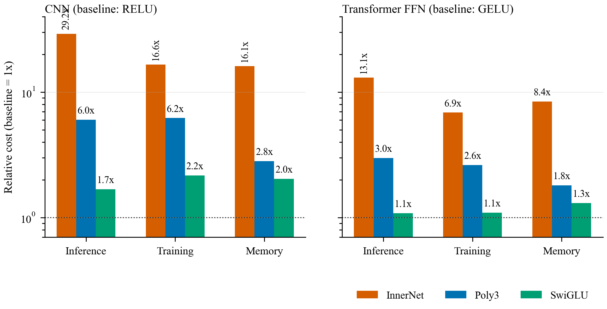
图 5｜当前实现的计算成本。 CNN 以 ReLU、Transformer FFN 以 GELU 为 1 倍基线。Poly3 是普通框架算子组成的未融合实现。图中的延迟和内存测量不能外推融合 kernel 的速度。
我们在 CIFAR-10 CNN 中把训练后的二维表面拟合为固定三阶多项式，并用该公式实际替换 InnerNet。吞吐从每秒 1,622 张增至 4,345 张，相对 InnerNet 提高 2.68 倍。准确率从 84.95±0.57% 降到 81.32±0.32%，下降 3.63 个百分点。Poly3 的吞吐只有 SwiGLU 的 40.7%，也就是仍慢 2.46 倍。当前实现没有融合，这项实验说明闭式替换可以执行，同时也给出了尚未解决的误差与系统开销。
| CIFAR-10 CNN 算子 | 准确率 | 吞吐量 | 相对结果 |
|---|---|---|---|
| InnerNet | 84.95±0.57% | 1,622 图像/秒 | 训练后二维函数 |
| 固定 Poly3 | 81.32±0.32% | 4,345 图像/秒 | 快 2.68 倍，低 3.63 个百分点 |
| SwiGLU | 79.97±0.37% | 10,680 图像/秒 | Poly3 比其慢 2.46 倍 |
| ReLU | 79.93±0.17% | 15,059 图像/秒 | 标量基线 |
2.4 原论文复现与跨架构边界
受控宿主实验回答函数形态由何决定，分类复现则检查实现是否保留原工作的基本现象。四个主要 MLP/CNN 任务中，二参数模型的平均准确率都高于对应 ReLU 基线。CNN CIFAR-10 中，二参数模型为 78.57±0.74%，ReLU 为 73.99±0.49%；在相同位置加入 LayerNorm 后，ReLU 为 75.14±0.34%。差值主要在训练早期形成。FashionMNIST 与 SVHN 中，一参数版本略高于二参数版本，说明二元形式没有统一优势。
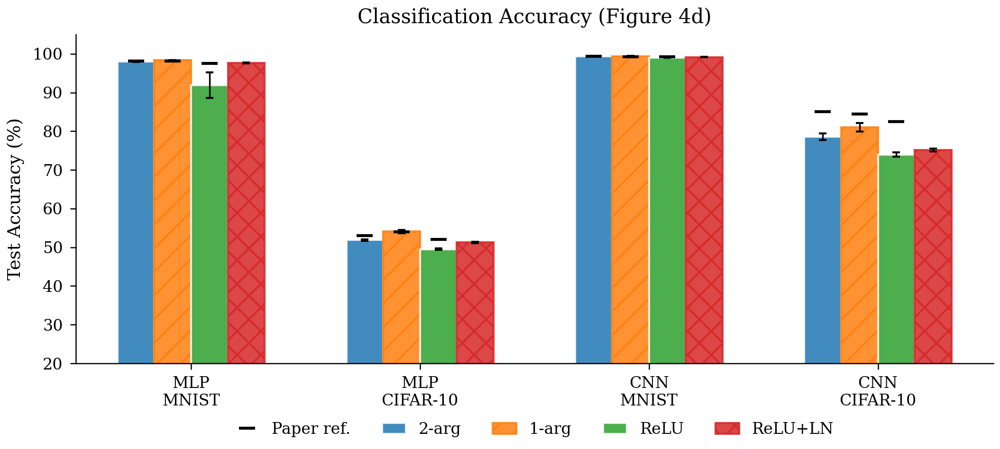
图 6a｜原论文结果复核。 三项任务的相对方向与原论文一致。CNN CIFAR-10 保留相对优势，但绝对精度低于从原论文曲线读取的数值。
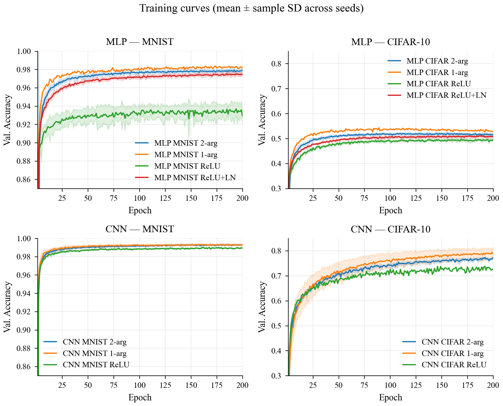
图 6b｜共同 200 epoch 窗口内的训练曲线。 同一设置的均值曲线按最短 seed 截断，没有补平提前结束的记录。阴影表示跨种子的离散程度。
在 WikiText-2 的 d=128 Transformer 中，InnerNet 的困惑度为 95.26±1.00，低于 GELU 的 96.82±1.19，同时高于 SwiGLU 的 92.98±1.14。这个设置给出了方法边界：连续二元函数可以优于常用一元激活，但从头训练时仍未达到成熟门控算子。四个宽度上的均值都呈相同排序。d=192 和 d=256 的 InnerNet 与 GELU 配对差值没有达到显著水平；较大的 GPT scratch 运行也尚未完成全部计划种子。
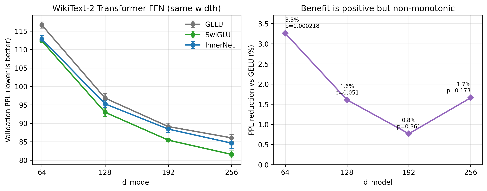
图 7｜Transformer 宽度与测试困惑度。 WikiText-2 四个宽度均显示 InnerNet 位于 GELU 与 SwiGLU 之间。GPT 设置只完成 3/5 个计划种子，因此图中数值不用于确定规模趋势。
其他架构给出正负混合的结果。自编码器在 MNIST、FashionMNIST 和 CIFAR-10 上的平均重建误差分别下降 42.8%、11.1% 和 25.4%。WikiText-2 LSTM 的差值较小，InnerNet 与标准模型分别为 103.28±0.62 和 104.34±0.60 PPL。这里先取每个 seed 在记录期内的最低验证困惑度，再计算五个 seed 的均值和 population SD。PPO Acrobot 的配对 return 差值为 21.7，配对 t 检验 p=0.0036；LunarLander 没有检测到差异。Sequential MNIST 的紧凑循环单元在八次完成运行中达到 98.44±0.22%，但训练后表面不能稳定拟合为标准 sigmoid gate。这些结果扩展了经验范围，也表明任务性能不能由某一种可视化表面单独解释。
InnerNet 容量消融同样没有给出单调收益。在固定 WikiText-2 d=128 设置中，隐藏宽度 8、16、32 和 64 的平均 PPL 为 96.17、95.76、95.26 和 95.09。Friedman 检验 p=0.392，没有检测到总体差异；预设 ±1 PPL 边界的 TOST 也没有建立严格等价。h=64 的运行时间为 h=8 的 4.86 倍。
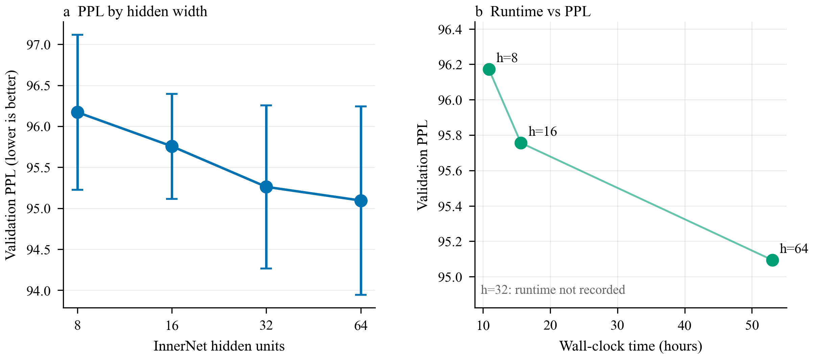
图 8｜InnerNet 隐藏宽度与运行成本。 左图给出五个随机种子的均值与标准差。右图只显示有完整 wall-clock 记录的设置；h=32 复用较早结果，没有可比的总运行时间。
3 讨论
3.1 宿主条件性允许怎样的解释
40 个替换条件显示，训练后表面不能脱离外围网络解释。在两个所测宿主中，InnerNet 恢复了宿主原有的函数族，并且标签对所测初始化稳定。这个结果比单独观察一张 SwiGLU-like 或 XOR-like 表面多了一层干预依据。在当前协议下，共享二元函数可以作为这两个宿主的恢复探针：释放已知局部算子后，闭式拟合和跨条件比较可用于判断对应结构是否保留。
这里的辨识是操作性的说法。经典系统辨识需要可辨识性条件、输入激励假设和误差模型，本文没有建立这些条件。双线性与 SwiGLU 也只是两种已知宿主。20/20 与 20/20 的分离不能推广为外围网络普遍决定局部算子，实验也没有比较宿主附近的全部可行函数。现有结果只表明当前探针能区分这两个已训练宿主。
3.2 与激活搜索和算子发现的差异
PANGAEA、Swish search 和 EvoNorm 直接搜索可执行的公式或操作图 [5][6][7]。InnerNet 的搜索对象更窄：它不改变网络拓扑，只释放一个反复调用的二维局部函数。连续函数表示减少了训练前的符号约束，也使最终表面可能难以高效执行。本文得到的 multiplication 与 SwiGLU 都已由宿主预先指定，因此当前结果属于已知算子恢复，没有产出一个经过独立重训验证的新公式。
Poly3 替换说明神经探针和部署算子可以使用不同表示，但这条路径仍有明显损失。2.68 倍提速伴随 3.63 个准确率点下降，未融合 Poly3 也慢于 SwiGLU。Cranmer 等人与 KAN 已经表明神经模块可以转为符号表达 [12][24]。本文的增量在于测量共享二元算子被实际替换后的任务性能和运行时间。现有数字支持可执行性，不支持高效部署已经完成。
3.3 神经科学结构动机与边界
InnerNet 保留了树突计算中的一个结构特征：不同输入通路在单个计算单元内部发生非线性整合。Larkum 等人的跨层输入耦合、Poirazi 等人的树突子单元模型和 Gidon 等人的 XOR-like 树突事件，为这种两路局部函数提供了结构动机 [23][21][2]。Beniaguev 等人发现，逼近主动树突神经元的输入输出映射需要较深的时序网络，这也提醒我们单个神经元的计算远比静态二维表面复杂 [22]。
这种抽象便于做控制实验。两路投影、共享规则和二维表面都能被干预。如果不同输入通路承担明确的信息来源，就可以检验某种局部交互是否依赖通路分工。当前结果还不能作这种解释。模型没有树突形态、电导、脉冲时序或细胞类型，也没有与神经记录拟合。表面看起来像 soft XOR 或门控，不足以证明人工网络采用了与皮层树突相同的机制。本文没有新增生物数据，神经科学也不构成相对 Yoon 等人工作的新增贡献。
3.4 局限
宿主干预只覆盖乘法和 SwiGLU，且 SwiGLU 宿主只测试联合训练。Transformer 主比较保持相同模型宽度，没有严格匹配总参数量。部分大模型 scratch 实验缺少计划中的两个种子，不能确定规模趋势。冻结宿主的 77.38 对 77.38 只是四舍五入后的相同均值，没有统计等价结论。Sequential MNIST 的功能结果也没有对应到稳定的标准门控公式。
部署实验使用未融合 Poly3，并在一个 CNN 设置中损失 3.63 个准确率点。现有测量无法判断更稀疏的公式、从头训练固定算子或专用融合 kernel 能否改善这一折中。上述限制决定了本文的结论范围：共享二元 InnerNet 可以在当前协议下恢复两个已训练宿主中的已知局部算子，并量化一次公式替换的代价；它还不是通用的算子发现或部署方法。
4 方法
4.1 共享二元 InnerNet
对外围网络某一层的输入 x， 我们计算两路线性投影 a=W1x 和 b=W2x， 再由共享函数生成输出：
标准 InnerNet 是两输入、一输出的 MLP，含两层 ReLU 隐藏层。原始分类设置的隐藏宽度为 64，Transformer 主要设置使用宽度 32。参数 θ 在同一网络的多个调用位置共享。分类模型在 InnerNet 前使用 LayerNorm，在其后使用 dropout。
4.2 宿主替换与函数标签
双线性与 SwiGLU Transformer 宿主各使用五个随机种子。双线性宿主中的 InnerNet 使用随机或乘法初始化，并在联合训练与冻结外围网络两种模式下优化，共 5×2×2=20 个条件。SwiGLU 宿主使用随机、恒等、乘法或 SwiGLU 初始化，并与外围网络联合训练，共 5×4=20 个条件。
每个训练后函数在固定二维网格上采样。分析拟合 multiplication、scaled SwiGLU、symmetric SwiGLU、Poly2 和 Poly3，并记录 R² 与 RMSE。图 2 的离散标签只比较 multiplication 和 scaled SwiGLU 的 R²。Poly2 与 Poly3 不参与投票。分组平均 multiplication R² 的范围为 0.9976-0.9993，逐条件范围为 0.9949-0.9996；scaled SwiGLU 的对应范围为 0.9853-0.9912 和 0.9830-0.9938。
4.3 冻结宿主、warm-start 与 scratch
frozen-host 实验从五个已训练 SwiGLU Transformer 开始。替换局部算子后，外围参数保持冻结，只更新 InnerNet。warm-start 分支允许外围网络与 InnerNet 共同更新；对照分支继续使用 SwiGLU。scratch 模型从独立初始化训练。由于 scratch 运行尚未补齐计划种子，正文只将其用于说明现有证据范围，不进行完整的规模统计。
4.4 固定公式替换与系统测量
CNN 部署实验在训练后的二维输入区域采样 InnerNet 输出，以最小二乘拟合三阶多项式。拟合完成后，Poly3 作为固定模块替换原 InnerNet，并在五个相同随机种子上测量任务准确率。吞吐在同一块 RTX 2080 Ti 上测量。Poly3、InnerNet、SwiGLU 和 ReLU 都使用当前 PyTorch 实现，没有为 Poly3 编写融合 kernel。
4.5 任务、统计与审计
原论文复现覆盖 MNIST 与 CIFAR-10 的 MLP 和 CNN。扩展实验包括自编码器、WikiText-2 与 Penn Treebank 语言模型、循环网络和强化学习。具有相同随机种子的比较采用配对 t 检验，并同时计算 Wilcoxon 检验、Cohen's dz 和 bootstrap 置信区间。语言模型的主要汇总先取每个 seed 在记录期内的最低验证困惑度，再计算跨 seed 均值和 population SD。hidden-width 消融使用 Friedman 检验，等价性使用预先指定 ±1 PPL 边界的 TOST。canonical manifest 索引 510 个实验和 1,708 行结构化指标，其中 441 个实验已从结果文件核对。
附录
附录 A 补充结果
A.1 分类复现汇总
| 任务 | 二参数 InnerNet | ReLU | 绝对差值 |
|---|---|---|---|
| MLP，MNIST | 98.0% | 91.9% | +6.1 |
| MLP，CIFAR-10 | 52.1% | 49.5% | +2.6 |
| CNN，MNIST | 99.41±0.04% | 99.02±0.03% | +0.39 |
| CNN，CIFAR-10 | 78.57±0.74% | 73.99±0.49% | +4.58 |
A.2 CNN 数据集扩展
| 数据集 | 二参数 InnerNet | 一参数版本 | ReLU | SwiGLU |
|---|---|---|---|---|
| MNIST | 99.41±0.04% | 99.42±0.06% | 99.02±0.03% | 未测 |
| CIFAR-10 | 78.57±0.74% | 81.02±1.02% | 73.99±0.49% | 79.79±0.54% |
| FashionMNIST | 90.91±0.29% | 91.36±0.47% | 89.34±0.13% | 未测 |
| SVHN | 94.78±0.61% | 95.16±0.23% | 92.55±0.19% | 未测 |
| CIFAR-100，大 CNN | 53.74±0.88% | 未测 | 50.00±0.83% | 46.48±0.50% |
A.3 Transformer 规模结果
| 设置 | GELU PPL | SwiGLU PPL | InnerNet PPL |
|---|---|---|---|
| WikiText-2，d=64 | 116.63 | 112.31 | 112.83 |
| WikiText-2，d=128 | 96.82 | 92.98 | 95.26 |
| WikiText-2，d=192 | 89.11 | 85.43 | 88.42 |
| WikiText-2，d=256 | 86.05 | 81.56 | 84.62 |
| Penn Treebank，d=128 | 212.28 | 205.82 | 207.91 |
| GPT 设置，d=256 | 约 72.6 | 约 74.5 | 约 76.2，3/5 seeds |
A.4 跨任务函数表面
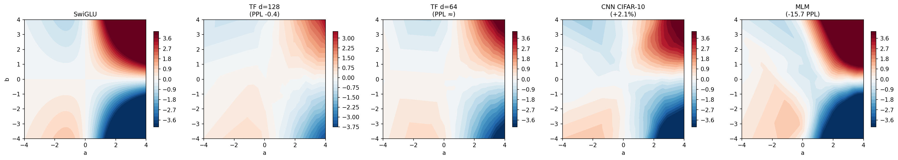
图 A1｜不同任务的训练后二维表面。 Transformer、CNN 与 masked language modeling 检查点中的函数形态不同。未经宿主干预，这些差异不能直接归因于任务。
A.5 参数效率
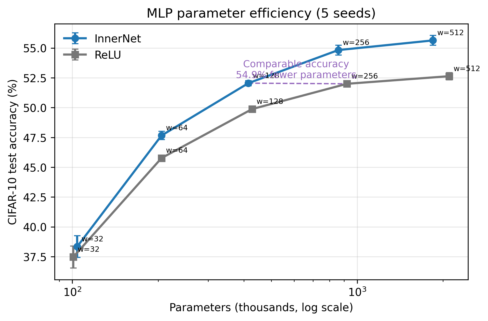
图 A2｜容量受限 MLP 中的参数效率。 共享二元函数在较小外围宽度下取得较高准确率。随着基础网络变宽，差值缩小。
附录 B 负面结果与适用边界
| 设置 | 观察 | 当前解释范围 |
|---|---|---|
| RNN，Penn Treebank | InnerNet PPL 约 169-179，tanh 约 140 | 二元局部单元没有替代稳定循环动力学 |
| GPT 从头训练 | InnerNet 落后 GELU 和 SwiGLU，且只完成 3/5 seeds | 现有预算下联合优化较困难，规模结论未定 |
| Qwen2.5-0.5B 直接替换 | 准确率约从 89% 降至 80% | 成熟模型不能无过渡地更换局部算子 |
| ResNet 全部位置替换 | 整体持平 | 二元单元的收益依赖插入位置与外围通路 |
| Sequential MNIST gate 拟合 | 标准 sigmoid gate 的 R² 不稳定 | 功能结果没有识别出唯一门控机制 |
附录 C 实验追溯
原论文复现配置位于
config/experiments/mlp_*.yaml
与
config/experiments/cnn_*.yaml。
Transformer 主实验位于
config/experiments/transformer_wikitext_*.yaml，
hidden-width 消融位于
config/experiments/transformer_wikitext_2arg_innerh{8,16,64}.yaml。
宿主矩阵汇总见
results/audit/causal_matrix_summary.json，
frozen-host 数据见
results/audit/grouped_metric_summary.csv，
Poly3 替换与系统成本分别见
results/audit/deploy_analysis.json
和
results/audit/compute_cost_profile.json。
附录 D 成稿前实验备注
参考文献
- Yoon, K., Orhan, E., Kim, J., and Pitkow, X. Two-Argument Activation Functions Learn Soft XOR Operations Like Cortical Neurons. IEEE Access, 2022。本地论文 PDF。 本文工作的直接起点：提出共享二输入 InnerNet，并在 MLP 与 CNN 中观察到 soft XOR 类表面、性能与鲁棒性收益。
- Gidon, A. 等。 Dendritic Action Potentials and Computation in Human Layer 2/3 Cortical Neurons. Science, 2020。 在人类皮层树突中观察到可区分线性不可分输入的事件，为 XOR-like 树突计算提供实验依据。
- Lin, M., Chen, Q., and Yan, S. Network In Network. ICLR, 2014。 用局部小型 MLP 替代线性滤波，是 micro-network 架构的早期代表，但不分析共享二元标量函数。
- He, K., Zhang, X., Ren, S., and Sun, J. Delving Deep into Rectifiers: Surpassing Human-Level Performance on ImageNet Classification. ICCV, 2015。 提出 PReLU，只学习负半轴斜率，代表低自由度可学习激活函数。
- Ramachandran, P., Zoph, B., and Le, Q. V. Searching for Activation Functions. arXiv:1710.05941, 2017。 从预定义一元和二元 primitive 的组合中搜索激活公式，并发现 Swish。
- Bingham, G. and Miikkulainen, R. Discovering Parametric Activation Functions. Neural Networks, 2022。 PANGAEA 结合进化搜索与梯度优化，并报告不同架构偏好不同的参数化激活函数。
- Liu, H., Brock, A., Simonyan, K., and Le, Q. V. Evolving Normalization-Activation Layers. NeurIPS, 2020。 从基础操作中搜索归一化与激活的联合结构，最终得到可直接执行的 EvoNorm 公式。
- Ma, N., Zhang, X., Liu, M., and Sun, J. Activate or Not: Learning Customized Activation. CVPR, 2021。 ACON 学习非线性状态与近线性状态之间的切换，meta-ACON 进一步让参数依赖输入上下文。
- Dai, Y. 等。 Attention as Activation. arXiv:2007.07729, 2020。 把局部跨通道信息放进激活计算，是 context-aware activation 的相邻方法。
- Molina, A., Schramowski, P., and Kersting, K. Padé Activation Units: End-to-end Learning of Flexible Activation Functions in Deep Networks. ICLR, 2020。 用低阶有理函数学习紧凑的一元激活，兼顾函数自由度和闭式表达。
- Bohra, P. 等。 Learning Activation Functions in Deep (Spline) Neural Networks. IEEE Open Journal of Signal Processing, 2020。 用 B-spline 学习自由形态的一元激活，并通过正则化控制复杂度。
- Liu, Z. 等。 KAN: Kolmogorov-Arnold Networks. ICLR, 2025。 在网络边上学习一元 spline，并通过剪枝与 symbolification 提取简单表达式。
- Liu, H., Simonyan, K., and Yang, Y. DARTS: Differentiable Architecture Search. ICLR, 2019。 把候选操作的离散选择连续松弛，再用梯度优化结构参数。
- Real, E., Liang, C., So, D. R., and Le, Q. V. AutoML-Zero: Evolving Machine Learning Algorithms From Scratch. ICML, 2020。 从基本数学 primitive 搜索完整学习算法，其搜索范围覆盖模型、损失和更新规则。
- Wei, T., Wang, C., Rui, Y., and Chen, C. W. Network Morphism. arXiv:1603.01670, 2016。 通过保函数变换把成熟网络迁移到更大结构，为本文的 warm-start 设计提供方法背景。
- Hochreiter, S. and Schmidhuber, J. Long Short-Term Memory. Neural Computation, 1997。 用乘法门控制记忆写入、保留和读取，是多输入门控的经典设计。
- Cho, K. 等。 Learning Phrase Representations using RNN Encoder-Decoder for Statistical Machine Translation. EMNLP, 2014。 提出 GRU，用更紧凑的门控结构稳定循环状态更新。
- Dauphin, Y. N., Fan, A., Auli, M., and Grangier, D. Language Modeling with Gated Convolutional Networks. ICML, 2017。 GLU 用两路线性投影和逐元素乘法构成门控，是 InnerNet 二输入形式的直接工程参照。
- Shazeer, N. GLU Variants Improve Transformer. arXiv:2002.05202, 2020。 系统比较 GLU 变体并提出 SwiGLU；本文在 Transformer 实验中把它作为主要基线。
- Jayakumar, S. 等。 Multiplicative Interactions and Where to Find Them. ICLR, 2020。 把 gating、attention、hypernetwork 和动态卷积统一解释为乘法交互。
- Poirazi, P., Brannon, T., and Mel, B. W. Pyramidal Neuron as Two-Layer Neural Network. Neuron, 2003。 详细区室模型显示，非线性树突子单元可形成类似两层网络的单神经元计算。
- Beniaguev, D., Segev, I., and London, M. Single Cortical Neurons as Deep Artificial Neural Networks. Neuron, 2021。 复现主动树突神经元的输入输出映射需要较深时序网络，说明单神经元具有较高计算复杂度。
- Larkum, M. E., Zhu, J. J., and Sakmann, B. A New Cellular Mechanism for Coupling Inputs Arriving at Different Cortical Layers. Nature, 1999。 给出不同皮层层次输入通过树突事件发生非线性耦合的实验依据。
- Cranmer, M. 等。 Discovering Symbolic Models from Deep Learning with Inductive Biases. NeurIPS, 2020。 先训练神经模型，再对内部模块做 symbolic regression，并用闭式方程替换原模块。
- Sahoo, S., Lampert, C., and Martius, G. Learning Equations for Extrapolation and Control. ICML, 2018。 从预定义数学 primitive 中学习稀疏方程，目标是恢复具有外推能力的解析关系。
本页是中文论文草稿的贡献优先重构版。正文数据来自项目的 canonical 实验记录与结果审计。
Bilingual, contribution-first reframed version
Recovering shared bivariate local operators in trained neural networks
Abstract
Learnable bivariate activation functions form visualizable two-dimensional surfaces, but direct interventions have not established whether the trained shape comes from function initialization, task data, or representations already present in the host network. We replace multiplication and SwiGLU with an InnerNet in two trained Transformer hosts, then vary the probe's initial function and training protocol. All 20 conditions in the bilinear host recover multiplication, and all 20 conditions in the SwiGLU host recover a SwiGLU-like function. This result is limited to these two hosts and the current protocol. With the host network frozen, the WikiText-2 perplexities of InnerNet and the original SwiGLU solution both round to 77.38; this shows that InnerNet can approximate the existing local operator in this host, but it is not a statistical equivalence test. We also replace a trained CNN surface with a fixed third-order polynomial. The unfused Poly3 implementation is 2.68 times faster than InnerNet, while losing 3.63 accuracy points and remaining 2.46 times slower than SwiGLU. Reproduction of the original paper and experiments across architectures further show that the effect of a bivariate local function depends on the network and training path. Within the two hosts studied here, we therefore use a shared bivariate InnerNet as a probe for local operator recovery. Multi-input dendritic computation motivates this model form, but this study adds no biological data.
1 Introduction
Artificial neurons usually aggregate their inputs before applying a univariate nonlinearity. Biological neurons integrate inputs in a more compartmentalized way. Basal and apical dendrites receive signals from different sources, and local dendritic events can couple inputs from different cortical levels [23]. Detailed models of pyramidal neurons also show that multiple nonlinear dendritic subunits can form a computational structure resembling a two-layer network [21]. Gidon et al. observed events in human cortical dendrites that distinguish linearly inseparable inputs and described them as XOR-like computations [2]. These studies pose a concrete modeling question: if a single computational unit receives two projections, what local function will it form after task training?
Yoon et al. addressed this question with a shared two-input InnerNet [1]. The same small multilayer perceptron is reused throughout a host network, with its inputs interpreted as analogues of basal and apical dendritic pathways. That work connected trained surfaces, soft XOR, and observations from cortical dendrites. In MLPs and CNNs trained on MNIST and CIFAR-10, the learned functions often took quadratic, gated, or soft-XOR forms. In some settings, the models learned faster and were more robust to natural and adversarial perturbations. The original paper also compared random initial functions, analyzed curvature and frequency content, and fitted quadratic polynomials. Bivariate activations, soft XOR, and the neuroscience analogy are therefore not contributions of the present study.
The original study leaves an experimentally separable question. A trained two-dimensional surface may reflect its InnerNet initialization, or it may be a local computation that is easy to preserve near the host's existing representation. A surface obtained from a single end-to-end training run cannot distinguish these explanations. Polynomial fitting likewise shows only that a neural module can be approximated by a simple formula. The formula must be placed back into the network to measure how approximation error affects task performance and runtime.
We intervene on local operators in trained networks. We first train hosts with either fixed multiplication or fixed SwiGLU, then replace the operator with InnerNets initialized in several ways. This design shows what the same probe recovers in different hosts. Frozen-host, joint-training, and scratch controls separate function representation from joint optimization. We then place the fitted formula back into the model and measure accuracy and throughput. Cross-task experiments follow these controlled results and define the architectures in which the method is effective. The number of tasks is not itself a main contribution.
Figure 1 | A shared bivariate local function. A standard unit applies a fixed nonlinearity to one weighted sum. InnerNet receives two linear projections and computes the shared function fθ(a,b). The same function is reused across neurons and layers, so the trained two-dimensional surface can be analyzed independently of any single location.
1.1 Related work
Learnable activation functions make different tradeoffs between flexibility and readability. PReLU learns only the slope on the negative half-axis [4], while Padé activation units and spline activations allow a univariate curve to change during training [10][11]. ACON and Attention as Activation further condition a local nonlinearity on the input or channel context [8][9]. Network In Network replaces simple linear filters in convolutional layers with local MLPs [3]. The InnerNet used here comes directly from the two-input design of Yoon et al. Our experiments measure how its trained function changes with host state; the ability to learn soft XOR follows from the original work.
Searches for activation functions and local operators usually specify a formula graph or a set of operations in advance. Swish emerged from a search over combinations of unary and binary primitives [5]. PANGAEA combines evolutionary search with continuous parameter optimization and finds architecture-dependent activation functions [6]. EvoNorm searches joint expressions for normalization and activation [7]. DARTS and AutoML-Zero extend search to network operations and learning algorithms, respectively [13][14]. InnerNet does not search a whole-network topology. It replaces a repeatedly used local operator with a continuous bivariate function. The present study tests only whether it can recover the corresponding known operator from bilinear and SwiGLU hosts.
Multiplication and gating already have established designs. LSTM and GRU use gates to control recurrent state [16][17], while GLU and SwiGLU construct elementwise gates from two linear projections [18][19]. Multiplicative interactions also provide a common description of attention, hypernetworks, and dynamic convolution [20]. Recovery in a SwiGLU host tests only whether the probe can read out an existing operator.
There are also direct precedents for extracting formulas after training. Equation Learner fits sparse equations over predefined mathematical primitives [25]. Cranmer et al. apply symbolic regression to modules inside neural networks and replace those modules with closed-form expressions [24]. KAN learns splines on network edges and obtains simple formulas through pruning and symbolification [12]. Our study concerns a shared bivariate local function and measures host replacement, task performance after formula replacement, and runtime. Network Morphism transfers a trained network to a new structure through function-preserving transformations, which provides related background for training from a mature host [15].
2 Results
2.1 The recovered function family changes with the host operator
We first train two types of Transformer host. The first uses the fixed bilinear operator a·b, and the second uses fixed SwiGLU. After training each host, we replace the fixed operator with a shared InnerNet. In the bilinear host, we test random and multiplication initialization with either frozen-host or joint training. In the SwiGLU host, we test random, identity, multiplication, and SwiGLU initialization with joint training. Each setting has five random seeds, giving 40 conditions in total.
| Host | Probe variation | Conditions | Recovery result |
|---|---|---|---|
| Bilinear | Random or multiplication initialization; frozen-host or joint training | 20 | 20/20 classified as multiplication; per-condition multiplication R²=0.9949-0.9996 |
| SwiGLU | Random, identity, multiplication, or SwiGLU initialization; joint training | 20 | 20/20 classified as SwiGLU; per-condition scaled SwiGLU R²=0.9830-0.9938 |
Figure 2 | Operator recovery in two host types. Each cell corresponds to one random seed and probe setting. Function labels compare only the R² values of multiplication and scaled SwiGLU. M and S denote these two labels. Poly2 and Poly3 describe additional fits but do not enter the label decision.
The two hosts separate completely across the 40 conditions in the current experiment. The same initial function receives different labels in different hosts, while the tested initializations within a host receive the same label. Initialization alone cannot explain these surfaces. The conclusion is limited to the bilinear and SwiGLU hosts and the current replacement protocol: the recovered function family changes with the host operator. The experiment does not separate the effects of representation scale, feature basis, and gradient field. It also does not show that the recovered function is the unique solution near the host.
Figure 3 | Closed-form fit to a trained surface. A scaled SwiGLU term explains 97.7% of the variance in an InnerNet from one Transformer checkpoint. A fit to one surface cannot determine how the function arose. Figure 2 uses two host types and multiple initializations for a controlled comparison.
2.2 A frozen host separates representation capacity from joint optimization
Host replacement also tests whether InnerNet can preserve an already trained local operator. We first train a SwiGLU Transformer with d=128 on WikiText-2, then replace its local operator with InnerNet. When only InnerNet is trained and all other parameters are frozen, the mean perplexities of frozen InnerNet and the SwiGLU capacity baseline across five seeds are 77.377 and 77.385, respectively. Both round to 77.38. The two groups have different dispersion, and we do not perform an equivalence test here. This result shows only that InnerNet can approximate the existing SwiGLU solution in this host and under this training budget.
When the host network and InnerNet can both update, the model can move away from the original SwiGLU solution. Warm-start trajectories are more stable than scratch trajectories, but this difference is also affected by the representation at initialization, feature scale, and optimization budget. The current scratch controls do not contain all planned seeds, so we do not infer a general rule about initialization from these runs. The controlled result supports a narrower conclusion: end-to-end performance differences cannot be attributed entirely to InnerNet's inability to represent SwiGLU, and joint optimization accounts for at least part of the difficulty in the tested setting.
Figure 4 | Training trajectories branched from the same SwiGLU host. The left panel compares continued SwiGLU training with joint training after replacement by a trainable InnerNet. The right panel freezes the host network and updates only InnerNet. Curves summarize five random seeds. In the frozen experiment, replacement preserves the original solution when reported to two decimal places.
2.3 Replacement with fixed Poly3 exposes accuracy and speed costs
A shared InnerNet has few parameters, but its computation graph contains repeated elementwise transformations, intermediate tensors, and unfused kernels. On the same RTX 2080 Ti, forward passes through the current InnerNet implementation are 17.33 times slower than SwiGLU in the CNN and 12.02 times slower in the Transformer. Profiled FLOPs do not explain the full gap because scheduling small kernels and accessing memory consume substantial runtime.
Figure 5 | Computational cost of the current implementation. ReLU in the CNN and GELU in the Transformer FFN set the 1× baselines. Poly3 is an unfused implementation composed of standard framework operations. The latency and memory measurements cannot be extrapolated to the speed of a fused kernel.
In a CIFAR-10 CNN, we fit a fixed third-order polynomial to the trained two-dimensional surface and replace InnerNet with that formula. Throughput rises from 1,622 to 4,345 images per second, a 2.68-fold increase over InnerNet. Accuracy falls from 84.95±0.57% to 81.32±0.32%, a loss of 3.63 percentage points. Poly3 reaches only 40.7% of SwiGLU throughput and remains 2.46 times slower. The current implementation is unfused. This experiment shows that closed-form replacement is executable, while also measuring the remaining approximation error and system overhead.
| CIFAR-10 CNN operator | Accuracy | Throughput | Relative result |
|---|---|---|---|
| InnerNet | 84.95±0.57% | 1,622 images/s | Trained two-dimensional function |
| Fixed Poly3 | 81.32±0.32% | 4,345 images/s | 2.68 times faster, 3.63 percentage points lower |
| SwiGLU | 79.97±0.37% | 10,680 images/s | Poly3 is 2.46 times slower |
| ReLU | 79.93±0.17% | 15,059 images/s | Scalar baseline |
2.4 Reproduction of the original paper and boundaries across architectures
The controlled host experiments ask what determines function shape. The classification reproduction tests whether our implementation preserves the basic observations of the original work. Across the four main MLP and CNN tasks, the mean accuracy of the two-argument model exceeds that of the corresponding ReLU baseline. On CNN CIFAR-10, the two-argument model reaches 78.57±0.74%, compared with 73.99±0.49% for ReLU and 75.14±0.34% for ReLU with LayerNorm at the same location. Most of the difference appears early in training. On FashionMNIST and SVHN, the one-argument version is slightly better than the two-argument version, so the bivariate form has no uniform advantage.
Figure 6a | Check of the original paper's results. Three tasks show the same relative direction as the original paper. CNN CIFAR-10 retains a relative advantage, but its absolute accuracy is lower than the value read from the original paper's curve.
Figure 6b | Training curves within a shared 200-epoch window. The mean curve for each setting is truncated to its shortest seed, without padding records that end early. Shading shows dispersion across seeds.
In the WikiText-2 Transformer with d=128, InnerNet obtains a perplexity of 95.26±1.00, below GELU at 96.82±1.19 and above SwiGLU at 92.98±1.14. This setting shows a boundary of the method: a continuous bivariate function can outperform a common univariate activation, yet scratch training does not reach the established gated operator. The mean results at all four widths have the same ordering. Paired differences between InnerNet and GELU do not reach significance at d=192 or d=256. The larger GPT scratch runs also lack some planned seeds.
Figure 7 | Transformer width and test perplexity. At all four WikiText-2 widths, InnerNet lies between GELU and SwiGLU. The GPT setting completed only 3/5 planned seeds, so those values do not establish a scaling trend.
Other architectures give mixed positive and negative results. Mean autoencoder reconstruction error falls by 42.8%, 11.1%, and 25.4% on MNIST, FashionMNIST, and CIFAR-10, respectively. The WikiText-2 LSTM difference is small: InnerNet reaches 103.28±0.62 PPL, compared with 104.34±0.60 for the standard model. For this comparison, we take the lowest validation perplexity recorded for each seed, then compute the mean and population SD across five seeds. The paired return difference on PPO Acrobot is 21.7, with p=0.0036 in a paired t test; LunarLander shows no detected difference. A compact recurrent unit reaches 98.44±0.22% across eight completed Sequential MNIST runs, but its trained surface cannot be fitted reliably by a standard sigmoid gate. These experiments broaden the empirical range and show that task performance cannot be explained by a single visualized surface.
The InnerNet capacity ablation likewise shows no monotonic gain. In the fixed WikiText-2 d=128 setting, hidden widths 8, 16, 32, and 64 yield mean PPL values of 96.17, 95.76, 95.26, and 95.09. A Friedman test gives p=0.392 and detects no overall difference. TOST with a prespecified ±1 PPL margin also fails to establish strict equivalence. The h=64 run takes 4.86 times as long as h=8.
Figure 8 | InnerNet hidden width and runtime cost. The left panel shows means and standard deviations over five random seeds. The right panel includes only settings with complete wall-clock records. The h=32 condition reuses an earlier result and has no comparable total runtime.
3 Discussion
3.1 What host dependence allows us to infer
The 40 replacement conditions show that trained surfaces cannot be interpreted apart from their host networks. In the two hosts studied, InnerNet recovers the original host function family, and the labels are stable across the tested initializations. This intervention provides more evidence than observing a single SwiGLU-like or XOR-like surface. Under the current protocol, a shared bivariate function can act as a recovery probe for these two hosts. After a known local operator is released, closed-form fitting and comparisons across conditions can test whether the corresponding structure remains.
We use identification here in an operational sense. Classical system identification requires identifiability conditions, assumptions about input excitation, and an error model. We do not establish those conditions. Bilinear and SwiGLU are also only two known hosts. The 20/20 and 20/20 separation does not show that host networks generally determine local operators, nor does the experiment compare all feasible functions near a host. The current result shows only that this probe distinguishes the two trained hosts.
3.2 Relation to activation search and operator discovery
PANGAEA, the Swish search, and EvoNorm directly search executable formulas or operation graphs [5][6][7]. InnerNet has a narrower search object. It leaves the network topology unchanged and releases only a repeatedly used bivariate local function. A continuous function representation imposes fewer symbolic constraints before training, but the resulting surface may be difficult to execute efficiently. Multiplication and SwiGLU were specified by the hosts in our experiments. The current results therefore recover known operators and do not produce a new formula validated by independent retraining.
Poly3 replacement shows that a neural probe and a deployment operator can use different representations, but the current path has a substantial loss. A 2.68-fold speedup comes with a 3.63-point accuracy drop, and unfused Poly3 remains slower than SwiGLU. Cranmer et al. and KAN have already shown that neural modules can be converted into symbolic expressions [12][24]. The additional measurement here is task performance and runtime after actual replacement of a shared bivariate operator. The current numbers establish executability, not efficient deployment.
3.3 Neuroscience motivation and its limits
InnerNet retains one structural feature of dendritic computation: different input pathways undergo nonlinear integration inside a single computational unit. Coupling between inputs from different cortical layers in Larkum et al., dendritic subunit models in Poirazi et al., and XOR-like dendritic events in Gidon et al. motivate this two-input local function [23][21][2]. Beniaguev et al. found that approximating the input-output mapping of an active dendritic neuron requires a relatively deep temporal network, which also shows that single-neuron computation is far more complex than a static two-dimensional surface [22].
This abstraction permits controlled experiments. The two projections, shared rule, and two-dimensional surface can all be manipulated. If the input pathways have defined information sources, one could test whether a local interaction depends on the division of labor between pathways. The current results do not support that interpretation. The model has no dendritic morphology, conductances, spike timing, or cell types, and it is not fitted to neural recordings. A surface that resembles soft XOR or a gate does not show that an artificial network uses the same mechanism as cortical dendrites. This study adds no biological data, and neuroscience is not a new contribution relative to Yoon et al.
3.4 Limitations
The host intervention covers only multiplication and SwiGLU, and the SwiGLU host is tested only with joint training. The main Transformer comparison keeps model width fixed rather than matching total parameter count exactly. Some large-model scratch experiments lack two planned seeds, so they cannot establish a scaling trend. The frozen-host result of 77.38 versus 77.38 is equality only after rounding and does not establish statistical equivalence. The Sequential MNIST result also does not map to a stable standard gating formula.
The deployment experiment uses unfused Poly3 and loses 3.63 accuracy points in one CNN setting. The current measurements cannot determine whether a sparser formula, training a fixed operator from scratch, or a specialized fused kernel would improve this tradeoff. These limits define the scope of the conclusions. Under the current protocol, a shared bivariate InnerNet can recover known local operators in two trained hosts and quantify the cost of one formula replacement. It is not yet a general method for operator discovery or deployment.
4 Methods
4.1 Shared bivariate InnerNet
For input x to a layer of the host network, we compute two linear projections, a=W1x and b=W2x, and use a shared function to produce the output:
The standard InnerNet is an MLP with two inputs, one output, and two ReLU hidden layers. Hidden width is 64 in the original classification setting and 32 in the main Transformer setting. Parameters θ are shared across multiple uses in the same network. The classification models apply LayerNorm before InnerNet and dropout after it.
4.2 Host replacement and function labels
The bilinear and SwiGLU Transformer hosts each use five random seeds. In the bilinear host, InnerNet is initialized either randomly or as multiplication and optimized with joint training or a frozen host network, for 5×2×2=20 conditions. In the SwiGLU host, InnerNet is initialized randomly, as identity, as multiplication, or as SwiGLU and jointly trained with the host network, for 5×4=20 conditions.
We sample each trained function on a fixed two-dimensional grid. The analysis fits multiplication, scaled SwiGLU, symmetric SwiGLU, Poly2, and Poly3, then records R² and RMSE. The discrete labels in Figure 2 compare only the R² values of multiplication and scaled SwiGLU. Poly2 and Poly3 do not enter the vote. Group mean multiplication R² ranges from 0.9976-0.9993, while the per-condition range is 0.9949-0.9996. The corresponding ranges for scaled SwiGLU are 0.9853-0.9912 and 0.9830-0.9938.
4.3 Frozen-host, warm-start, and scratch protocols
The frozen-host experiment starts from five trained SwiGLU Transformers. After replacing the local operator, we keep all host parameters frozen and update only InnerNet. The warm-start branch updates both the host network and InnerNet, while the control branch continues with SwiGLU. Scratch models train from independent initializations. Because the scratch runs do not contain all planned seeds, the main text uses them only to define the scope of the evidence and does not report complete scaling statistics.
4.4 Fixed-formula replacement and system measurement
For the CNN deployment experiment, we sample InnerNet outputs over the trained two-dimensional input region and fit a third-order polynomial by least squares. After fitting, Poly3 replaces the original InnerNet as a fixed module, and we measure task accuracy with the same five random seeds. Throughput is measured on the same RTX 2080 Ti. Poly3, InnerNet, SwiGLU, and ReLU all use the current PyTorch implementations. We do not implement a fused kernel for Poly3.
4.5 Tasks, statistics, and audit
Reproduction of the original paper covers MLPs and CNNs on MNIST and CIFAR-10. The extended experiments include autoencoders, language models on WikiText-2 and Penn Treebank, recurrent networks, and reinforcement learning. Comparisons with matching random seeds use paired t tests and also report Wilcoxon tests, Cohen's dz, and bootstrap confidence intervals. The main language-model summaries take the lowest validation perplexity recorded for each seed, then compute the cross-seed mean and population SD. The hidden-width ablation uses a Friedman test, and equivalence testing uses TOST with a prespecified ±1 PPL margin. The canonical manifest indexes 510 experiments and 1,708 rows of structured metrics, of which 441 experiments have been checked against result files.
Appendix
Appendix A Supplementary results
A.1 Summary of the classification reproduction
| Task | Two-argument InnerNet | ReLU | Absolute difference |
|---|---|---|---|
| MLP, MNIST | 98.0% | 91.9% | +6.1 |
| MLP, CIFAR-10 | 52.1% | 49.5% | +2.6 |
| CNN, MNIST | 99.41±0.04% | 99.02±0.03% | +0.39 |
| CNN, CIFAR-10 | 78.57±0.74% | 73.99±0.49% | +4.58 |
A.2 Additional CNN datasets
| Dataset | Two-argument InnerNet | One-argument version | ReLU | SwiGLU |
|---|---|---|---|---|
| MNIST | 99.41±0.04% | 99.42±0.06% | 99.02±0.03% | Not measured |
| CIFAR-10 | 78.57±0.74% | 81.02±1.02% | 73.99±0.49% | 79.79±0.54% |
| FashionMNIST | 90.91±0.29% | 91.36±0.47% | 89.34±0.13% | Not measured |
| SVHN | 94.78±0.61% | 95.16±0.23% | 92.55±0.19% | Not measured |
| CIFAR-100, large CNN | 53.74±0.88% | Not measured | 50.00±0.83% | 46.48±0.50% |
A.3 Transformer scaling results
| Setting | GELU PPL | SwiGLU PPL | InnerNet PPL |
|---|---|---|---|
| WikiText-2, d=64 | 116.63 | 112.31 | 112.83 |
| WikiText-2, d=128 | 96.82 | 92.98 | 95.26 |
| WikiText-2, d=192 | 89.11 | 85.43 | 88.42 |
| WikiText-2, d=256 | 86.05 | 81.56 | 84.62 |
| Penn Treebank, d=128 | 212.28 | 205.82 | 207.91 |
| GPT setting, d=256 | about 72.6 | about 74.5 | about 76.2, 3/5 seeds |
A.4 Function surfaces across tasks
Figure A1 | Trained two-dimensional surfaces across tasks. Function shapes differ among Transformer, CNN, and masked language modeling checkpoints. Without a host intervention, these differences cannot be attributed directly to the task.
A.5 Parameter efficiency
Figure A2 | Parameter efficiency in capacity-limited MLPs. The shared bivariate function obtains higher accuracy with a narrower host network. The difference shrinks as the base network becomes wider.
Appendix B Negative results and boundaries
| Setting | Observation | Current scope of interpretation |
|---|---|---|
| RNN, Penn Treebank | InnerNet PPL about 169-179, tanh about 140 | The bivariate local unit does not replace stable recurrent dynamics |
| GPT scratch training | InnerNet trails GELU and SwiGLU, with only 3/5 seeds complete | Joint optimization is difficult under the current budget; the scaling result is unresolved |
| Direct replacement in Qwen2.5-0.5B | Accuracy falls from about 89% to 80% | A mature model cannot change its local operator without a transition |
| Replacement at all ResNet positions | Overall performance is unchanged | The benefit of a bivariate unit depends on insertion position and host pathways |
| Sequential MNIST gate fitting | R² for a standard sigmoid gate is unstable | The functional result does not identify a unique gating mechanism |
Appendix C Experiment provenance
Configuration files for reproducing the original paper are located at
config/experiments/mlp_*.yaml
and
config/experiments/cnn_*.yaml.
The main Transformer experiments are located at
config/experiments/transformer_wikitext_*.yaml,
and the hidden-width ablation is located at
config/experiments/transformer_wikitext_2arg_innerh{8,16,64}.yaml.
The host matrix summary is in
results/audit/causal_matrix_summary.json,
frozen-host data are in
results/audit/grouped_metric_summary.csv,
and the Poly3 replacement and system costs are in
results/audit/deploy_analysis.json
and
results/audit/compute_cost_profile.json,
respectively.
Appendix D Experimental note before submission
References
- Yoon, K., Orhan, E., Kim, J., and Pitkow, X. Two-Argument Activation Functions Learn Soft XOR Operations Like Cortical Neurons. IEEE Access, 2022. Local paper PDF. This paper is the direct starting point for our study: it introduces the shared two-input InnerNet and reports soft-XOR-like surfaces, performance gains, and robustness gains in MLPs and CNNs.
- Gidon, A. et al. Dendritic Action Potentials and Computation in Human Layer 2/3 Cortical Neurons. Science, 2020. The study observes events in human cortical dendrites that distinguish linearly inseparable inputs, providing experimental evidence for XOR-like dendritic computation.
- Lin, M., Chen, Q., and Yan, S. Network In Network. ICLR, 2014. This early micro-network architecture replaces linear filters with small local MLPs, but it does not analyze a shared bivariate scalar function.
- He, K., Zhang, X., Ren, S., and Sun, J. Delving Deep into Rectifiers: Surpassing Human-Level Performance on ImageNet Classification. ICCV, 2015. PReLU learns only the negative-side slope and is a low-dimensional learnable activation function.
- Ramachandran, P., Zoph, B., and Le, Q. V. Searching for Activation Functions. arXiv:1710.05941, 2017. The method searches combinations of predefined unary and binary primitives and discovers Swish.
- Bingham, G. and Miikkulainen, R. Discovering Parametric Activation Functions. Neural Networks, 2022. PANGAEA combines evolutionary search with gradient optimization and reports that different architectures prefer different parameterized activation functions.
- Liu, H., Brock, A., Simonyan, K., and Le, Q. V. Evolving Normalization-Activation Layers. NeurIPS, 2020. The method searches joint normalization and activation structures from basic operations and produces directly executable EvoNorm formulas.
- Ma, N., Zhang, X., Liu, M., and Sun, J. Activate or Not: Learning Customized Activation. CVPR, 2021. ACON learns to switch between nonlinear and near-linear states, and meta-ACON further conditions its parameters on the input context.
- Dai, Y. et al. Attention as Activation. arXiv:2007.07729, 2020. This related context-aware activation method incorporates local cross-channel information into the activation computation.
- Molina, A., Schramowski, P., and Kersting, K. Padé Activation Units: End-to-end Learning of Flexible Activation Functions in Deep Networks. ICLR, 2020. Low-order rational functions provide compact learnable univariate activations that balance flexibility with a closed-form expression.
- Bohra, P. et al. Learning Activation Functions in Deep (Spline) Neural Networks. IEEE Open Journal of Signal Processing, 2020. The method learns free-form univariate activations with B-splines and controls their complexity through regularization.
- Liu, Z. et al. KAN: Kolmogorov-Arnold Networks. ICLR, 2025. KAN learns univariate splines on network edges and extracts simple expressions through pruning and symbolification.
- Liu, H., Simonyan, K., and Yang, Y. DARTS: Differentiable Architecture Search. ICLR, 2019. DARTS continuously relaxes the discrete choice among candidate operations and optimizes structural parameters by gradient descent.
- Real, E., Liang, C., So, D. R., and Le, Q. V. AutoML-Zero: Evolving Machine Learning Algorithms From Scratch. ICML, 2020. AutoML-Zero searches complete learning algorithms from basic mathematical primitives, including models, losses, and update rules.
- Wei, T., Wang, C., Rui, Y., and Chen, C. W. Network Morphism. arXiv:1603.01670, 2016. Function-preserving transformations transfer a trained network into a larger structure and provide methodological context for our warm-start design.
- Hochreiter, S. and Schmidhuber, J. Long Short-Term Memory. Neural Computation, 1997. LSTM uses multiplicative gates to control the writing, retention, and reading of memory, a canonical multi-input gating design.
- Cho, K. et al. Learning Phrase Representations using RNN Encoder-Decoder for Statistical Machine Translation. EMNLP, 2014. The paper introduces GRU, which uses a more compact gating structure to stabilize recurrent state updates.
- Dauphin, Y. N., Fan, A., Auli, M., and Grangier, D. Language Modeling with Gated Convolutional Networks. ICML, 2017. GLU combines two linear projections through elementwise gating and is a direct engineering reference for the two-input InnerNet form.
- Shazeer, N. GLU Variants Improve Transformer. arXiv:2002.05202, 2020. The study compares GLU variants and introduces SwiGLU, which is the main Transformer baseline in our experiments.
- Jayakumar, S. et al. Multiplicative Interactions and Where to Find Them. ICLR, 2020. The paper gives a common interpretation of gating, attention, hypernetworks, and dynamic convolution as multiplicative interactions.
- Poirazi, P., Brannon, T., and Mel, B. W. Pyramidal Neuron as Two-Layer Neural Network. Neuron, 2003. Detailed compartmental models show that nonlinear dendritic subunits can give a single neuron a computation resembling a two-layer network.
- Beniaguev, D., Segev, I., and London, M. Single Cortical Neurons as Deep Artificial Neural Networks. Neuron, 2021. Approximating the input-output mapping of an active dendritic neuron requires a relatively deep temporal network, indicating substantial single-neuron computational complexity.
- Larkum, M. E., Zhu, J. J., and Sakmann, B. A New Cellular Mechanism for Coupling Inputs Arriving at Different Cortical Layers. Nature, 1999. The experiments show nonlinear coupling through dendritic events between inputs arriving from different cortical levels.
- Cranmer, M. et al. Discovering Symbolic Models from Deep Learning with Inductive Biases. NeurIPS, 2020. The method first trains a neural model, applies symbolic regression to its internal modules, and replaces those modules with closed-form equations.
- Sahoo, S., Lampert, C., and Martius, G. Learning Equations for Extrapolation and Control. ICML, 2018. The method learns sparse equations from predefined mathematical primitives to recover analytical relations that can extrapolate.
This page is the bilingual, contribution-first reframed paper draft. The main-text data come from the project's canonical experiment records and result audit.